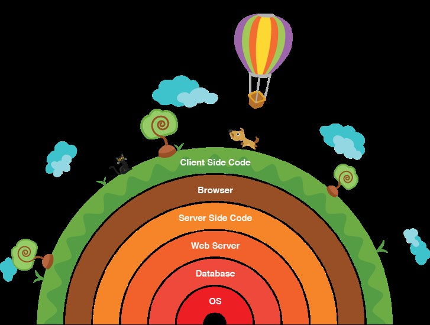

Apa yang Harus Dilakukan untuk Menjadi Full-Stack Developer?
Sebagai developer untuk memasuki dunia industri tentunya memiliki tantangannya sendiri yang semakin hari semakin kompleks permintaannya, dengan kondisi yang dinamis permintaan industri yang menuntut kita untuk bergeser ke tools dan bahasa pemrograman yang populer dan banyak digunakan. Bahkan jika dibayangkan coders, dahulu dengan satu bahasa pemrograman saja yang digunakan programmer dapat menyelesaikan sebuah aplikasi tetapi tidak dengan sekarang, programmer dituntut untuk tahu berbagai teknologi dari berbagai platform yang akan berdampak pada si programmernya dalam menyelesaikan pekerjannya dengan baik.
Apa yang dimaksud dengan Full-Stack Developer ?
Pernahkan sahabat coders bekerja pada suatu bahasa pemrograman misalnya kita akan membuat sebuah tampilan website dengan menggunakan bahasa pemrograman html, selain kita membuat kerangka websitenya ternyata kita juga harus bisa membuat desain atau tampilannya bisa kita menggunakan software editing photo dan juga kita haru mengkonversikan desain tersebut ke dalam bentuk kodefront-end. Dengan demikian inilah yang sering diistilahan Full-Stack Developer.
Ilustrasi Full-Stack Developer Istilah full-stack developer berarti developer yang nyaman bekerja dengan teknologi back-end dan front-end. Lebih spesifik lagi, developer bisa bekerja dengan database, PHP, HTML, CSS, javascript dan juga bisa mengkonversi desain software editing photo ke kode front-end.
Apakah seorang Full-Stack developer harus menguasai semua hal dan teknologi ?
Untuk menjadi seorang full-stack developer tidak harus menguasai semua hal dan teknologi yang dia perlukan untuk bekerja, karena itu suatu hal yang mustahil. Dia hanya perlu merasa nyaman bekerja dengan teknologi-teknologi tersebut dan itu cukup banyak untuk dipelajari.
Teknologi yang diperlukan Full-Stack Developer
Baiklah coders, mari kita bahas satu per satu teknologi utama apa saja yang diperlukan full-stack developer sekarang untuk bekerja :
System Administration
1. Linux dan basic shell scripting
2. Cloud computing: Amazon, Rackspace, etc.
3. Background processing: Gearman, Redis
4. Search: Elasticsearch, Sphinx, Solr
5. Caching: Varnish, Memcached, APC / OpCache
6. Monitoring: Nagios
Linux digunakan di sebagian besar Internet, secara umum menjadi sistem operasi di pengembangan web, seorang full-stack developer sebaiknya tahu cara kerja cloud hosting seperti Amazon, Rackspace, atau penyedia lainnya, beserta API-nya. Pencarian menjadi bagian yang tidak terpisahkan di sebagian website. Seorang developer sebaiknya harus tahu cara menyiapkan dan menggunakan server pencarian seperti sphinx atau elasticsearch.
Caching juga penting, seperti Varnish, reverse proxy, Memcached, dan opcode caching. Developer harus tahu hal-hal tersebut dan bagaimana cara menggunakannya.
Web Development Tools
1. Version control: Git, Mercurial, SVN
2. Virtualisasi: VirtualBox, Vagrant, Docker
Sekarang, sudah menjadi hal yang wajib untuk menggunakan version control, meskipun coders adalah solo web developer. Dengan didukung virtualisasi, mempunyai banyak lingkungan pengembangan per proyek sangat bagus untuk dimiliki dan sangat mudah untuk mengaturnya dengan VirtualBox dan Vagrant. Jika ingin bekerja dengan Vagrant, developer juga harus tahu sintaks dasar dari Ruby dan skrip shell.
Back-End Tech
1. Web servers: Apache, Nginx
2. Programming language: PHP, NodeJS, Ruby
3. Database: MySQL, MongoDB, Cassandra, Redis, SQL / JSON secara umum.
Apache & Nginx adalah web server yang banyak digunakan oleh web developer. Seorang full-stack developer harus tahu cara mengatur aplikasi-aplikasi ini untuk melayani konten websitenya.PHP hal yang harus dikuasai di tingkat tinggi, sementara NodeJS, Ruby baik juga untuk diketahui. Sebagai tambahan, manajemen basisdata juga menjadi syarat untuk seorang web developer. Perbedaan database relasional (seperti MySQL, PostgreSQL) vs non-relasional database (MongoDB, Redis, Casandra) adalah hal yang perlu diketahui, selain sintaks XML/JSON.
Front-End Tech
1. HTML / HTML5: Semantic web
2. CSS / CSS3: LESS, SASS, Media Queries
3. JavaScript: jQuery, AngularJS, Knockout, etc.
4. Compatibility quirks across browsers
5. Responsive design
6. AJAX, JSON, XML, WebSocket
Metodologi dan framework baru terus bermunculan tiap hari, mulai dari MVC, MVVM, MVP, Angular, Knockout, Ember, dll. Komunikasi dengan back-end via AJAX atau WebSocket juga penting untuk dipelajari.
Design
1. Converting website design into front-end code
2. UI
3. UX
Selain teknologi front-end, seorang full-stack developer juga harus paham apa yang mungkin bisa dibuat dan apa yang tidak dengan keterbatasan akan HTML/CSS/Javsacript dan menkonversi desain dari file software editing photo. Sebagai contoh, jika kita ingin menyiapkan Vagrant, kita harus tahu sintaks Ruby. Jika kita ingin memanipulasi elemen DOM, Jquery menjadi hal yang wajib dipelajari.
Kategori lain yang perlu disebutkan adalah mobile technologies. Mobile technologies merupakan industri yang sangat dinamis dan sangat erat kaitannya dengan web development:
1. iOS
2. Android
3. Hybrid: Phonegap, Appcelerator
Salah satu disparitas terbesar saat ini adalah antara pengembangan web dan mobile. Tetapi perbedaan tersebut semakin hari semakin tidak ada. Seorang full stack developer sebaiknya juga tahu akan teknologi ini.
Apakah lebih baik menjadi seorang Full-Stack Developer ?
Jika coders ingin menjadi seorang full-stack developer berarti harus mempunyai pikiran yang terbuka akan teknologi baru, harus bisa menggunakan setiap teknologi yang telah disebutkan diatas, dan harus mengerti bagaimana sebuah aplikasi dibuat, mulai dari konsep hingga menjadi produk jadi.
Ide seorang "full-stack developer" bukan berarti harus ahli, terbiasa akan semua teknologi yang ada karena spesialisasi ada untuk alasan tersebut. "full-stack developer" lebih kepada pengertian akan setiap area dan teknologi yang telah disebutkan diatas, bisa berkomunikasi dengan baik dengan rekan kerja, dan bisa menjadi aset yang berguna jika memang situasi memerlukan akan pengetahuan tersebut.